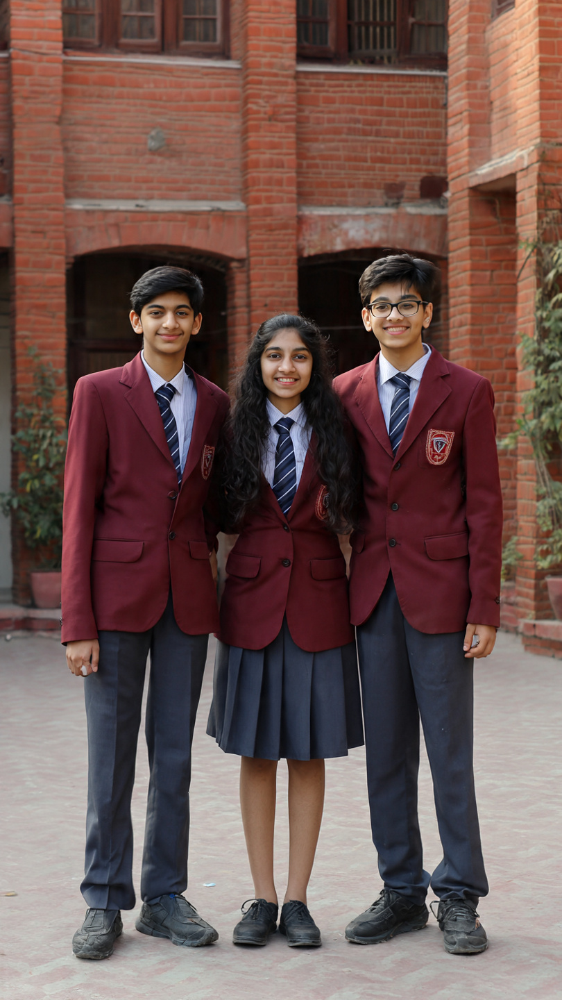

Everything Students Need to Know

The CBSE Class 10 board examination results are one of the most important milestones in a student’s academic journey. Every year, millions of students across India eagerly wait for their results, which play a crucial role in shaping their future education choices.
In 2026, the Central Board of Secondary Education is expected to release the Class 10 results in the usual timeframe, bringing relief and excitement to students, parents, and teachers. With increasing digital access, checking results has become easier and faster than ever before.
Based on previous trends, CBSE Class 10 results are generally announced in May. Students are advised to regularly check official websites for updates and avoid relying on rumors or unofficial sources.
Students can check their results online by visiting official CBSE portals. The process is simple and user-friendly:
Step 1: Visit the official CBSE result website Step 2: Click on Class 10 Result link Step 3: Enter required credentials Step 4: Submit and view result
Students are advised to download and take a printout for future reference.
CBSE follows a grading system instead of raw marks in some cases. Grades range from A1 to E, where A1 represents the highest level of performance. This system helps reduce exam pressure and focuses on overall understanding.
Internal assessments, practicals, and theory exams together determine the final result.
To pass the CBSE Class 10 exam, students must secure at least 33 percent marks in each subject. This includes both theory and internal assessment components.
Students who fail in one or two subjects may be eligible for compartment exams, giving them another chance to improve their performance.
After the results are declared, students must choose their stream for higher studies. The main options include Science, Commerce, and Arts. This decision should be based on interest, aptitude, and future career goals.
It is important not to panic and to seek guidance from teachers and parents while making this decision.
Always keep your login details ready before result day. Stay calm and avoid stress. Remember that marks are important but not the only factor that determines success in life.
Focus on long-term goals and keep learning continuously. Every result is an opportunity to improve and grow.
The CBSE Class 10 results mark a significant turning point for students. It is a moment of reflection, celebration, and planning for the future. With the right mindset and support, every student can move forward confidently.
No matter the outcome, students should remember that this is just one step in a long journey of learning and success.
Everything Students Need to Know